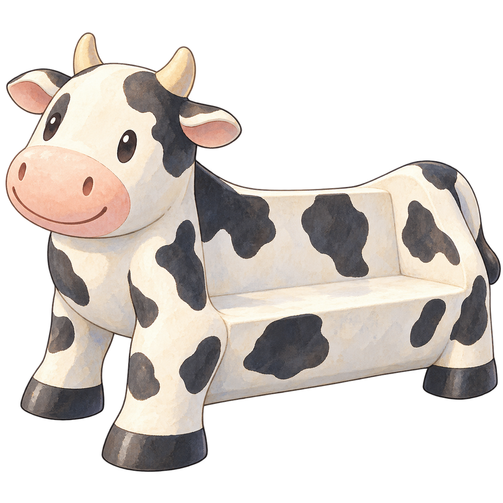

鐵道探索
旅程地圖
沿著鐵道，尋找散落在各地的回憶。
花蓮
距離探索區域過遠
請抵達車站附近後再探索
壽豐
距離探索區域過遠
請抵達車站附近後再探索
鳳林
距離探索區域過遠
請抵達車站附近後再探索
光復
距離探索區域過遠
請抵達車站附近後再探索
瑞穗
目前位置
📍 已進入探索範圍
點擊確認目前位置
玉里
距離探索區域過遠
請抵達車站附近後再探索
富里
距離探索區域過遠
請抵達車站附近後再探索
正在確認目前位置…
搜尋附近的車站探索區域
×
📍
已抵達・瑞穗站
NEW MISSION
瑞穗・第一段記憶
阿明似乎對車站裡的某樣東西有印象……
⌕
探索任務
尋找瑞穗站的乳牛裝置
開始探索
閱讀新回憶
← 返回地圖
目前探索區域
瑞穗站
⌕
目前任務
尋找瑞穗站的乳牛裝置
0 / 1
查看日記 →

×
將目標置於取景框中
✓
探索目標已記錄
瑞穗站乳牛裝置
任務完成 1 / 1
查看日記
移動畫面尋找任務目標